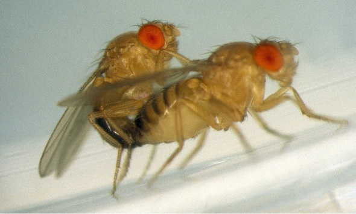

술을 먹는 이유
16/03/2012
커플이 되면 술을 덜 먹는 것이 아니라,
커플이 못 되어서 술을 먹을 수 밖에 없다.
커플이 못 되어서 술을 먹을 수 밖에 없다.
아, 물론 별 일 없이도 술을 먹고 싶을 때가 있어,
아주 잠시. 잠깐 그런 생각을 했긴 했어.
하지만 아냐. 아니라구.
누굴 알콜 중독자로 아나.
아주 잠시. 잠깐 그런 생각을 했긴 했어.
하지만 아냐. 아니라구.
누굴 알콜 중독자로 아나.
